1. 反爬之禁止开发者控制台

致读者: 点击上方 “雪之梦技术驿站” → 点击右上角“ ... ”→ 点选“设为星标 ★ ” 加上星标，就不会找不到我啦！
劝你别这样JS开发者控制台,非不信?无限 debugger 总算老实了吧!
1.1. 引言
开发 js 的过程中或多或少使用过debugger调试功能,当打开开发者控制台时会自动进入调试模式,中断用户操作,基于此可以用于作为反爬措施之一.
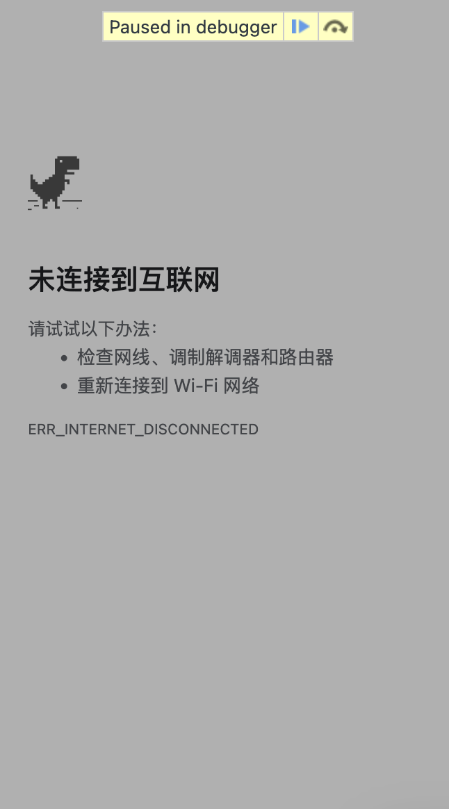
1.2. 效果
由于之前已经禁用了鼠标右键菜单和 F12,所以现在想要进入开发者控制台,只剩下提前打开这条路.
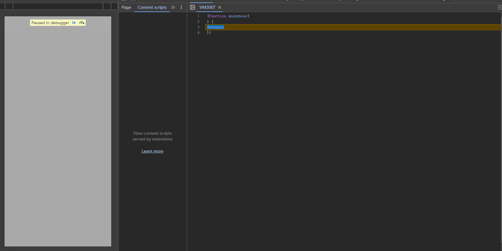
打开并进入https://vip.snowdreams1006.cn/可以看到自动进入无限循环的 debugger 调试模式,而且每次都是在新文件打开匿名函数.
(function anonymous(
) {
debugger
})
接下来,让我们一起探索这种方式能起什么作用吧!
1.3. 实验
基于闭包逻辑自动执行代码块,同时设置延时debugger逻辑,也可以死循环直接搞崩溃浏览器.
(() => {
function ban() {
setInterval(() => {
debugger;
}, 50);
}
try {
ban();
} catch (err) { }
})();
然后你将收获点不完的下一步,这是最直观的效果.
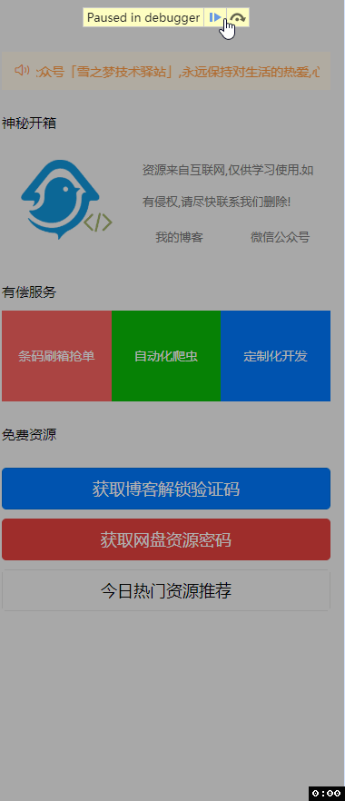
其实,破解这种方式也很简单,因为是断点 debugger 在作祟,那就禁用或者忽略断点调试功能即可.
- 禁用断点
Deactivate breakpoints(Ctrl + F8)
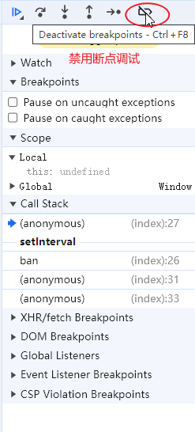
亲测有效,这也是最简单直接的破解方式,禁用断点调试,可以破解绝大部分这类的反爬手段.
- 添加日志断点
Add logpoint
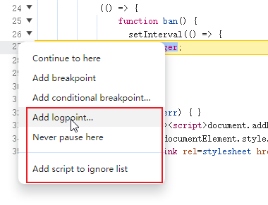
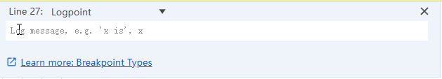
- 在这从不暂停
Never pause here
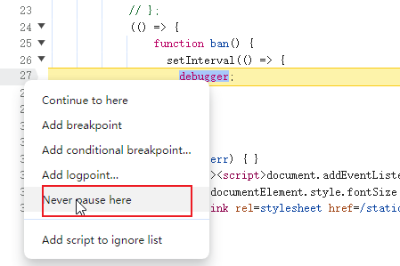
- 加入到忽略脚本列表
Add script to ignore list
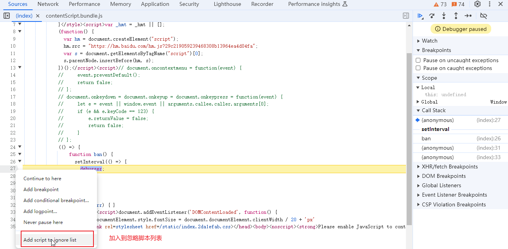
加入忽略列表后,Source源码选项卡底部会有忽略列表配置项提示也可以移除忽略列表.
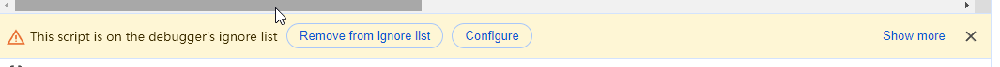
通过上述方式禁用断点再点击 Resume Script Execution(F8) 按钮继续脚本执行,然后即使再次刷新网站,也不会无限debugger断点调试了.
除了第一个禁用断点全局生效,其他方式只针对单个
debugger有用!
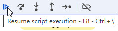
(() => {
function ban() {
setInterval(() => { debugger; }, 50);
}
try {
ban();
} catch (err) { }
})();
1.4. 升级
通过上述的实验,我们发现有很多种方式都可以跳出无限 debugger 的怪圈.
那就继续想办法升级改造,继续在debugger身上动脑筋,具体来说.
解决方案: 将 debugger 替换成 Function('debugger')()
这种Function构造器生成的 debugger 会在每一次执行时开启一个临时 js 文件
(() => {
function ban() {
setInterval(() => {
Function('debugger').call();
}, 50);
}
try {
ban();
} catch (err) { }
})();
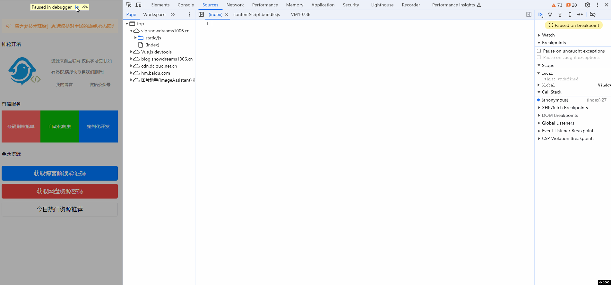
这种方式只有禁用断点
Deactivate breakpoints(Ctrl + F8)一种方式可以破解,其余在断点位置右键菜单选项均失效!
1.5. 总结
从简单的debugger引起重视,到闭包自执行逻辑改造成无限debugger模式,最后到临时文件中打开匿名函数.
这种升级改造不能说没什么用,只能算是用处不大,单一的方式不足以做到反爬,还是要全方位考虑.
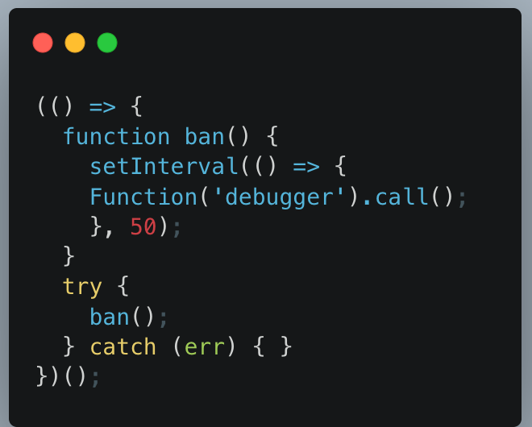
最后,由于本人才疏学浅,暂时只能想到这么三种方式禁止打开开发者控制台,组合在一起还是能发挥一定作用的!
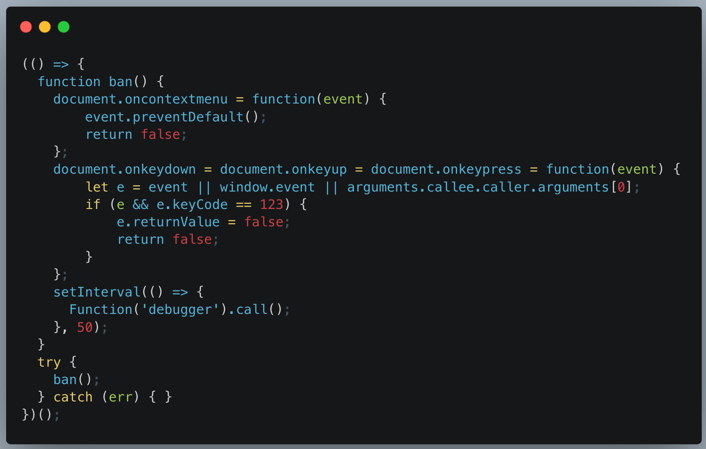
如果你有什么好的想法和思路,欢迎在评论区留言,大家一起交流!
放心留言,开启了自动留言精选,保证上墙哟~
1.6. 往期精彩文章

1.7. 欢迎扫码关注

欢迎扫码关注,私信回复『加群』一起交流技术
作者: 雪之梦技术驿站
来源: 雪之梦技术驿站
本文原创发布于「雪之梦技术驿站」,转载请注明出处,谢谢合作!